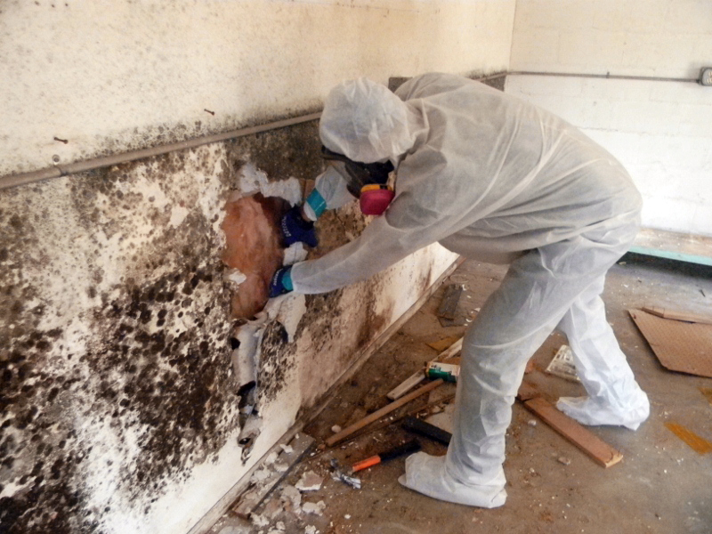

Interior Era are one of the Canada’s leading experts in diagnosing the causes of damp and condensation, which can lead to mold, combining a full diagnostic process with a plan for remedial action, along with a programme to eradicate the mold problem.
Insurers, homeowners, landlords and tenants can all benefit from the comprehensive service offered by Interior Era.
Mold is classed as a category one risk to health, as assessed under the Housing Health and Safety Rating System 2000, which is the same class as asbestos. The Environmental Protection Act (1990) classifies mold as a statutory nuisance that must be treated.
The Interior Era incorporates a 3 level process when considering Damp and Condensation issues in any property
Interior Era’s fully experienced technical team will then carry out a survey on the property, to identify possible causes of damp penetration and condensation inside the property. They will check for the following:
MInternally, the Interior Era technicians will check for visible damp conditions and evidence of mold contamination.
Damp and mold will often be concealed within the building structure – for example in cavities, under floorboards and behind skirting boards.
Wherever mold is evident, there is usually much more of it hidden within the building structure. We employ a wide range of sophisticated technical equipment to identify and analyse the contamination in these hidden areas, such as Endoscopes and Bore scopes with attached Inspection cameras which allow a detailed internal visual inspection in hard to access areas, without major disruption or damage to the building and its contents/decor.
General state of repair of the property – evidence of poor maintenance, often the source of water ingress and penetration into a property, including:
Picture opposite demonstrates moisture readings being taken which will determine the remedial action required.
Following the survey a full report will be issued to the landlord, homeowner, plumber or other instructing party, which will provide a complete analysis of the causes of damp and mold, and a course of remedial action will be proposed which will eradicate the problem. Upon approval of the summary of works Rainbow will commence the treatment, which depending upon the nature and severity of the damp and mold will include the following treatments:
Please Click Here for information on our full survey and remedial action to diagnose the causes of damp and how to eradicate the mold that often occurs as a consequence of damp living conditions.